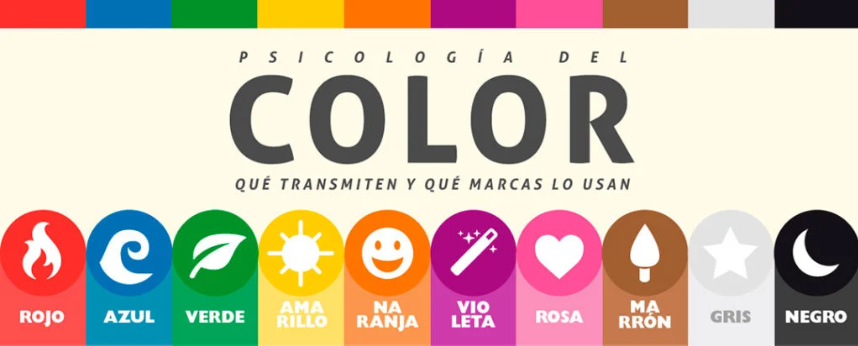
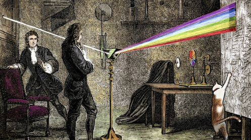

Psicología del color: significado y curiosidades de los colores
La psicología del color es una rama del estudio del comportamiento humano que analiza cómo los colores influyen en las emociones, decisiones y percepciones. Se utiliza ampliamente en marketing, diseño, arte, moda y psicoterapia, ya que cada color puede evocar reacciones diferentes en las personas.
Aunque no es una ciencia exacta, existen patrones bastante consistentes en cómo reaccionamos ante ciertos colores.

¿Es una ciencia exacta?
No lo es. La psicología del color no es una ciencia exacta, como lo son las matemáticas o la física. Se considera más bien una disciplina dentro de la psicología aplicada, que combina aspectos de la percepción, la cultura, la emoción y el contexto social.

Razones por las que no es una ciencia exacta
1. Influencia cultural:
Un color puede tener significados muy distintos en diferentes culturas. Por ejemplo, el blanco simboliza pureza en Occidente, pero luto en muchas culturas orientales.
2. Diferencias individuales:
Las personas tienen asociaciones personales con los colores basadas en sus experiencias, gustos y emociones. El rojo puede ser estimulante para una persona y agresivo para otra.
3. Resultados variables:
Aunque hay tendencias generales observadas (como que el azul transmite confianza), los resultados no son 100% consistentes en todos los contextos o estudios.
4. Contexto de uso:
Un color puede tener efectos diferentes según cómo, dónde y con qué se combine. Por ejemplo, el negro puede ser elegante en moda, pero opresivo en una habitación cerrada.
5. Falta de universalidad:
No existe una única teoría de la psicología del color que sea universalmente aceptada por la comunidad científica.